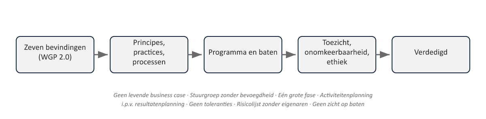

Sheet 2Twee dagdelen
Dagdeel A: de casus, de rollen, de voorbereiding
Dagdeel B: de simulatie zelf, en de slotreflectie
Sheet 3Niet verdedigen, maar samen doorleven
Deel 10 en 22: één groep verdedigt tegen een bevragende groep
Deel 30: vier rollen, gelijktijdig, dragen de crisis samen
Sheet 4De masterproefcasus
Vier weken vóór de go/no-go-datum voor de eerste groep
Een auditsignaal: onvolledig verwerkte partnergegevens uit een fondsovername, negen jaar geleden
Naar schatting 5% van de eerste groep geraakt
Sheet 5De wettelijke deadline
1 januari 2028 — de Wtp-transitie moet dan zijn afgerond
De go/no-go-datum voor de eerste groep ligt daar ruim vóór
Sheet 6Niet oplossen, maar verdedigbaar aanpakken
Wat gebeurt er met de go/no-go-datum?
Wat gebeurt er met de geraakte deelgroep?
Hoe wordt hierover gecommuniceerd — naar bestuur, toezicht, deelnemers?
Sheet 7De vier boardrollen
| Rol | Primaire vraag / inbreng |
|---|---|
| Bestuur (AB) | Kunnen wij dit besluit nu nog verantwoord nemen — en wat betekent uitstel voor onze geloofwaardigheid? |
| DNB | Hoe kon dit negen jaar onopgemerkt blijven, en is uw beheersing aantoonbaar genoeg om te garanderen dat dit zich niet herhaalt? |
| AFM | Hoe en wanneer informeert u de geraakte deelnemers, en is dat eerlijk en tijdig? |
| SRO | Draagt het advies: wat is de aanbeveling, en welk deel van het besluit ligt bij het bestuur (deel 26, §4)? |
Bestuur — kunnen wij dit dragen?
DNB — hoe kon dit negen jaar onopgemerkt blijven?
AFM — hoe informeert u de deelnemers?
SRO — wat is uw advies, en wat is aan het bestuur?
Sheet 8Opdracht 30.1 (15 min, individueel)
De casus in eigen woorden — werkboek p. 1
Sheet 9Vooraf gedeeld, en verzegeld

Vooraf: achtergrond, cijfers, eerdere rapportages
Verzegeld: pas open tijdens de simulatie zelf
Sheet 10Waarom dit zo is opgezet
Een echt boardgesprek is deels voorbereidbaar, deels niet
Wie alleen het vooraf gedeelde deel kent, is op de helft voorbereid
Sheet 11Opdracht 30.2 (40 min)
Rolverdeling + rolkaart bestuderen — werkboek p. 1-2
Sheet 12Opdracht 30.3 (30 min, individueel)
Eigen inbreng voorbereiden
Voor de SRO: een eerste opzet langs de vier elementen van deel 26
Sheet 13De sluitstuk-rubric: zes criteria
| Criterium | Kernvraag |
|---|---|
| a. Technische correctheid PRINCE2/MSP | Worden tolerantie, business justification, tranche, Justification-theme correct en op het juiste niveau toegepast? |
| b. Registerwisseling tussen de vier rollen | Blijft de kern van de bevinding overeind, ongeacht wie er aan het woord is? |
| c. Geaggregeerd risico en onomkeerbaarheid | Wordt het probleem in zijn volle, opgeschaalde betekenis gezien, niet als geïsoleerd detail? |
| d. Kwaliteit van het stop-/aanpassingsadvies | Zijn de vier elementen (erkende bijdrage, relatieve afweging, lot van het werk, besluit bij de juiste laag) herkenbaar aanwezig? |
| e. Ethische standvastigheid onder druk | Houdt de rolspeler, ook onder gecombineerde bevraging, de grens tussen legitiem-optimistisch en misleidend overeind? |
| f. Besluitvaardigheid en verdediging | Wordt er daadwerkelijk een positie ingenomen en volgehouden, in plaats van ontwijkend geantwoord? |
a. Technische correctheid PRINCE2/MSP
b. Registerwisseling tussen de vier rollen
c. Geaggregeerd risico en onomkeerbaarheid
d. Kwaliteit van het stop-/aanpassingsadvies
e. Ethische standvastigheid onder druk
f. Besluitvaardigheid en verdediging
Sheet 14Huiswerk (opdracht 30.4, geen inlevering)
Oefen uw opening of eerste positie hardop
Sheet 16Het format
Groepen van vier · circa 35 minuten
Opening (SRO) → bevraging (25 min) → besluitmoment (bestuur)
Sheet 17Opdracht 30.5
De boardsimulatie, gevolgd door 3 minuten peer-feedback per groep
Sheet 18Wat het board beoordeelt
De zes criteria, in hun zwaarste vorm — dit is het sluitstuk, geen nieuwe toets
Sheet 19Opdracht 30.6 (20 min, individueel)
Slotreflectie: sterkste moment, wat anders, en de zeven bevindingen uit deel 1 herkend in uw eigen optreden
Sheet 20Van deel 1 tot vandaag

Zeven bevindingen (WGP 2.0) → principes/practices/processen → programma en baten → toezicht, onomkeerbaarheid, ethiek → verdedigd
Sheet 21De boog van niveau 3
Deel 23: assessmentvaardigheid, nieuwe casus
Deel 24: toezicht en registerwisseling
Deel 25: transitie, invaren, onomkeerbaarheid
Deel 26: verdedigbaar stoppen
Deel 27: leiderschap en ethiek onder druk
Deel 28-29: casuïstiek onder tijdsdruk
Deel 30: alles samengebracht
Sheet 22Wat deze cursus heeft opgebouwd
Niveau 1: een project besturen
Niveau 2: opgeschaald naar programma en baten
Niveau 3: verantwoord onder toezicht, bij een onomkeerbaar besluit, onder druk
Sheet 23Dit is het einde van de cursus
PRINCE2 7 en MSP 5e editie, Foundation en Practitioner — inhoudelijk gedekt
IPMA D-C-B — het competentiedossier en assessmentgesprek blijven een eigen, individueel vervolgtraject
Dank voor uw inzet — en veel succes bij het echte werk.